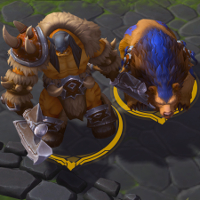
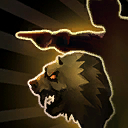
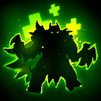
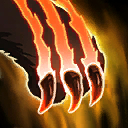
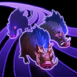
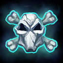
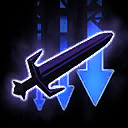

Rexxar
Welcome to our Rexxar guide for Heroes of the Storm. Here you will learn everything you need to know in order to play Rexxar in a competitive environment, whether you play on your own or with a team.
True Survivor Build
| Level 1 | Level 4 | Level 7 | Level 10 | Level 13 | Level 16 | Level 20 |
|---|---|---|---|---|---|---|
|  |  |  |  |  |  |
The True Survivor Build focuses, as the name suggests, on keeping Rexxar alive for as long as possible in order to keep stacking Animal Husbandry Icon Animal Husbandry. If successful, this build will give you an incredible amount of bonus health on both Misha and Rexxar. We definitely recommend picking defensive talents like Feign Death Icon Feign Death at Level 16 and Hardened Skin Icon Hardened Skin at Level 20 to help you in that matter.
Laning Misha Build
| Level 1 | Level 4 | Level 7 | Level 10 | Level 13 | Level 16 | Level 20 |
|---|---|---|---|---|---|---|
|  |
The Misha Build focuses more on buffing Misha's role as a Bruiser. Talents like Easy Prey Icon Easy Prey and Hungry Bear Icon Hungry Bear allow Rexxar to clear Mercenary Camps with great ease, while Thrill of the Hunt Icon Thrill of the Hunt turn both Misha and Rexxar into very efficient late game hunters.
Go Back